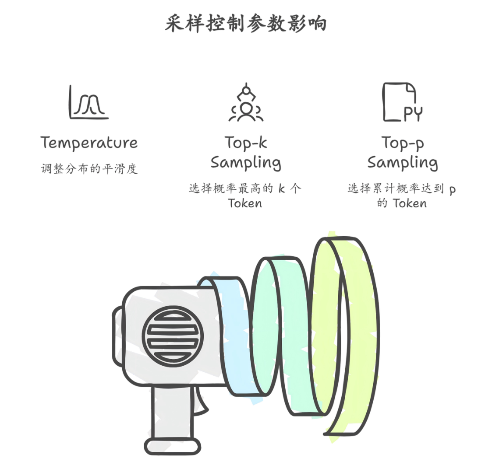

采样策略
在大语言模型的生成过程中，模型并不会直接输出唯一确定的结果，而是先计算出每一个候选 Token 的概率分布，然后根据一定的策略从这些候选 Token 中选择最终输出的 Token。这个选择过程被称为 采样策略（Sampling Strategy）。采样策略决定了模型生成文本时的随机性、多样性以及稳定性， 因此在实际应用中具有非常重要的作用。
在每一步生成 Token 时，模型会为词表中的所有 Token 计算一个概率值，这些概率表示在当前上下文 条件下各个 Token 出现的可能性。如果始终选择概率最高的 Token，那么生成的文本通常会更加稳 定，但也可能变得机械和缺乏变化。因此，大多数生成系统都会通过不同的采样策略在“确定 性”和“随机性”之间取得平衡，从而让模型既能够保持合理性，又能够生成多样化的内容。

最常见的采样控制参数之一是 Temperature（温度）。Temperature 的作用是调整概率分布的“平滑 程度”。当 Temperature 较低时，概率分布会变得更加尖锐，模型更倾向于选择概率最高的 Token， 因此生成结果会更加稳定和保守。当 Temperature 较高时，概率分布会被拉平，原本概率较低的 Token 也有更高的机会被选中，从而增加生成文本的多样性。不过，如果 Temperature 过高，模型可 能会生成逻辑混乱或语义不连贯的内容，因此在实际应用中通常需要进行合理的参数设置。
另一种常见的采样方法是 Top-k 采样。在这种策略中，模型不会在整个词表中进行选择，而是只保留 概率最高的前 k 个 Token，然后在这 k 个 Token 中进行随机采样。例如，当 k 设置为 50 时，模型只 会在概率排名前 50 的 Token 中进行选择，而其他 Token 的概率会被直接忽略。这种方法可以有效避 免模型生成概率极低的 Token，从而减少无意义或错误的输出。
与 Top-k 类似的还有 Top-p 采样（Nucleus Sampling）。Top-p 的核心思想是根据累计概率来选择 候选 Token。具体来说，模型会按照概率从高到低排序 Token，并不断累加概率，直到累计概率达到 设定的阈值 p。例如，当 p 设置为 0.9 时，模型会选择累计概率达到 90% 的最小 Token 集合，然后在 这些 Token 中进行随机采样。这种方法相比固定数量的 Top-k 更加灵活，因为候选 Token 的数量会根 据当前概率分布自动调整。
在实际生成任务中，Temperature、Top-k 和 Top-p 往往会结合使用。例如，系统可能会先通过 Temperature 调整概率分布，然后再通过 Top-p 或 Top-k 限制候选 Token 范围，从而在稳定性和多样 性之间取得更好的平衡。不同的应用场景通常需要不同的参数设置。例如，在代码生成或问答系统 中，通常希望模型输出更加准确和稳定，因此会使用较低的 Temperature；而在创意写作或故事生成 任务中，则可能会使用较高的 Temperature 来增加内容的多样性。
除了这些常见策略之外，还有一些其他的生成方法，例如 Greedy Search（贪心搜索） 和 Beam Search（束搜索）。贪心搜索在每一步都选择概率最高的 Token，因此生成过程完全确定，但往往缺 乏多样性。束搜索则会在生成过程中同时保留多个候选序列，并在多个可能路径中选择概率最高的结 果，这种方法常用于机器翻译等任务，但在开放式文本生成中使用较少。
总体来看，采样策略是控制大语言模型生成行为的重要工具。通过合理调整 Temperature、Top-k 和 Top-p 等参数，可以在稳定性、创造性和多样性之间找到合适的平衡，从而让模型在不同应用场景中 生成更加符合需求的文本内容。对于开发者而言，理解采样策略的原理并根据具体任务进行参数调 优，是构建高质量大模型应用的重要步骤。